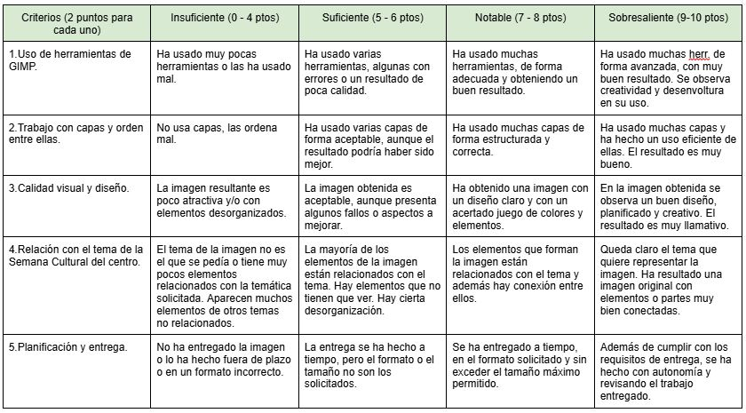

Creación libre de un cartel relacionado con la temática de la Semana Cultural utilizando las herramientas que ofrece GIMP y que hemos visto y trabajado en los apartados anteriores, utilizando capas, selecciones, pinceles, texto y relleno.
Dado que esta tarea es más compleja y laboriosa se podrá realizar tanto de forma individual como por parejas.
Es aconsejable ir guardando el trabajo cada cierto tiempo para no sufrir pérdidas inesperadas. La imagen se guardará en formato xcf propio de GIMP. También se exportará como imagen png o jpg.
La evaluación de esta tarea final se realizará con la rúbrica que se detalla en el documento enlazado y que se deberá consultar cada vez que sea necesario por parte del alumno/a para conocer qué se espera obtener y cómo se va a calificar.

Documento dónde se detalla el producto final que tenemos que crear con nuestro programa de edición y creación de imágenes GIMP, el cual hemos ido aprendiendo a utilizar a través de los apartados y tareas de esta Situación de Aprendizaje.